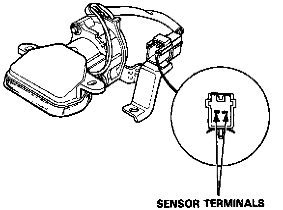
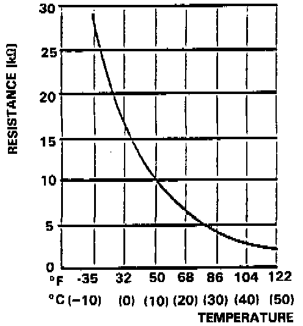

Component Test - Automatic Climate Control

CAUTION: The sensor uses a thermistor which can be damaged if high current is applied to it during testing. Therefore, use a circuit tester with a measuring current of 1 mA or less.

Compare the resistance reading between terminals of the in-car temperature sensor with specifications shown in the graph: should be within specification.